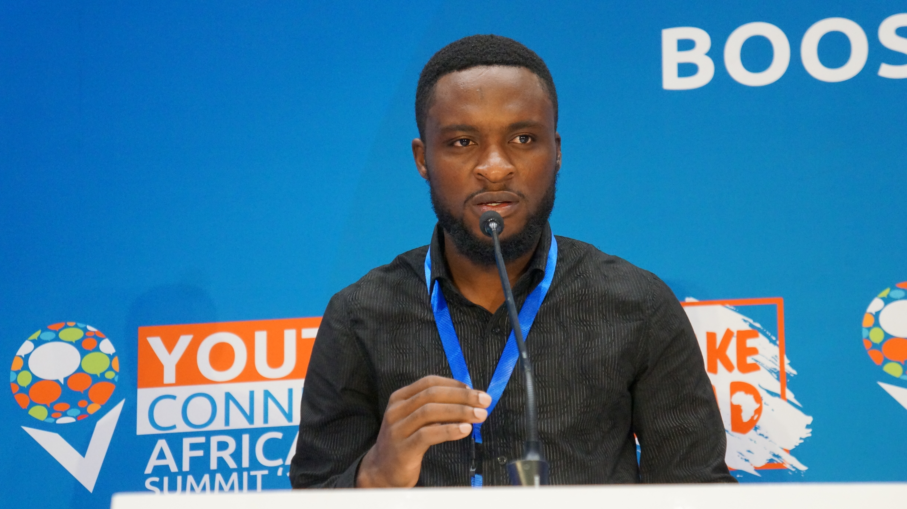

Cheh Valerie Tamukong

Cameroonian
valerietamukong@gmail.com
Summary
Cheh Valerie Tamukong is a dedicated high school teacher, REACH BACK Executive Director,
ROTO ENTERPRISE CEO and a Youth Civic Engagement Advocate. Very passionate about Involving
Youths in Leadership Development, Democratic Processes, Economic Empowerment, Climate Action
and Technology from Grassroots.
Education
- LLB in Public Law, University of Buea 2024.
- Technical School Teacher's Diploma, University of Bamenda 2019.
- GCE Advance Level 2010.
Work Experience
- Cameroon Ministry of Secondary Education (MINESEC) as a high school teacher since 2017.
- Executive Director of REACH BACK since 2019.
- CEO of ROTO ENTERPRISE since 2023.
Skills
- Leadership
- Project Management
- Web development
- Teaching
- Microsoft Office Tools
Awards
- Most Influential Youth in Nsongwa village 2021.
- Most Impactful Teacher in Government High School, Buea 2022.